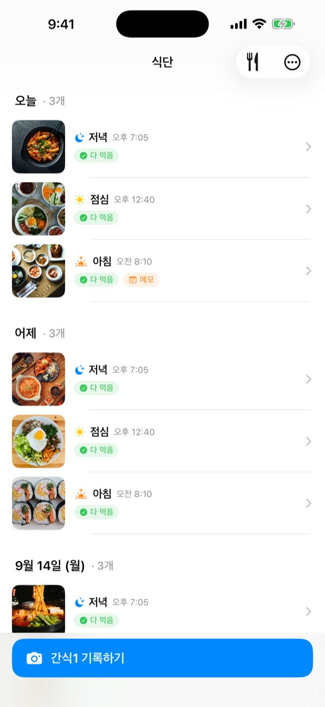
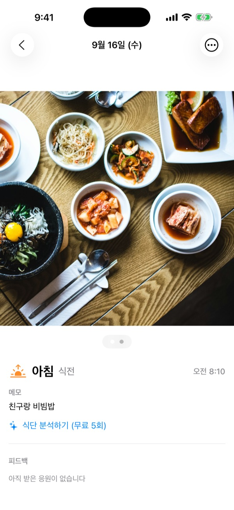
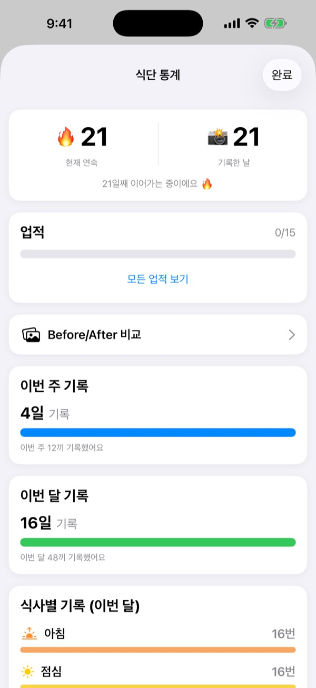
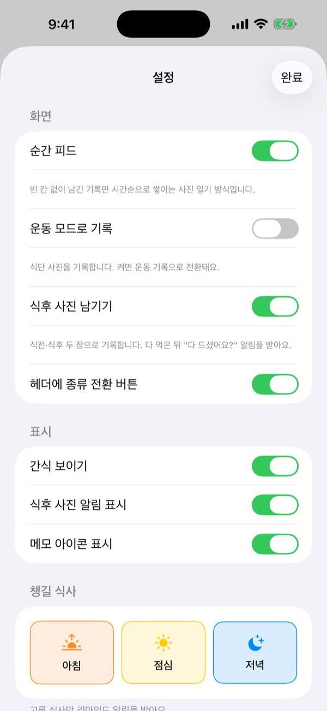

먹기 전에 한 장,
그걸로 기록 끝
찍은 시각을 보고 아침, 점심, 저녁, 간식으로 알아서 나눠 담아요. 하루에 한 끼만 남겨도 연속 기록이 이어져요.
기록, 통계, 위젯, 친구와 공유는 모두 무료예요.

직접 찍어 보세요
찍는 시각을 고르고 기록 버튼을 눌러 보세요. 버튼 이름이 앱처럼 그 시각의 끼니로 바뀌어요.
식단 기록, 사흘 만에 그만둔 적 있나요?
아침을 거른 날, 저녁을 깜빡한 날이 하나둘 생기면 빈칸이 눈에 밟혀서 결국 앱을 지우게 돼요. 세끼는 빈칸을 만들지 않아요. 남긴 끼니만 시간순으로 쌓이고, 한 끼만 찍어도 그날은 기록한 날이에요.
찍기만 하면 끼니가 정해져요
찍은 시각을 보고 아침, 점심, 저녁, 간식으로 나눠 담아요. 식전과 식후 사진, 사진 없이 남기는 기록, 메모까지 남길 수 있어요.
사진 속 음식은 기기 안에서 무료로 분석하고, 사진은 휴대폰 밖으로 나가지 않아요.

놓쳐도 줄지 않는 기록
하루에 한 끼만 남겨도 연속 기록이 이어지고, 누적 기록일은 절대 줄지 않아요. 주간과 월간 통계는 달성률 대신 며칠, 몇 끼를 남겼는지 보여 줘요.
일주일 연속, 아침형 인간 같은 업적도 하나씩 모여요.

챙길 식사만, 앱을 열지 않고
알림 받을 식사를 직접 고르고 식사 시간도 내 생활에 맞춰요. 식전 사진만 찍어 두면 알림에서 바로 다 먹음을 남길 수 있어요.
액션 버튼, Siri, 단축어, 홈 화면 위젯으로도 기록하고, 친구 코드로 친구를 더해 이모지와 댓글로 서로 응원해요.

시작은 세 단계면 돼요
- 1
챙길 식사를 골라요
처음 열면 알림 받을 식사를 물어요. 나중에 설정에서 바꿀 수 있어요.
- 2
먹기 전에 한 장 찍어요
기록 버튼에 지금 시각의 끼니가 미리 적혀 있어요. 누르고 찍으면 끝이에요.
- 3
다 먹으면 톡
알림이나 위젯에서 다 먹음을 누르거나, 식후 사진을 더해요.
앱을 열지 않고 기록하는 법
- 알림
- 식전 사진을 찍고 나면 오는 알림에서 바로 다 먹음
- 홈 화면 위젯
- 오늘 기록 수와 먹는 중인 끼니를 보고, 다 먹음 버튼을 눌러요
- 잠금화면 위젯
- 직사각형, 원형, 한 줄 모양으로 오늘 기록을 확인해요
- 액션 버튼 · Siri · 단축어
- 다 먹음을 말 한마디나 버튼 하나로 남겨요
- 사진 앱 저장
- 설정에서 켜면 세끼식단, 세끼운동 앨범에 따로 저장돼요
- 운동 모드
- 운동 기록은 식단과 따로 모이고, 이번 달 운동 횟수가 한눈에 보여요
위젯의 다 먹음 버튼은 iOS 17 이상에서 쓸 수 있어요.
기록은 무료, 더 깊이 보려면 세끼 프로
무료
- 사진 기록과 끼니 자동 분류, 식전·식후 사진, 메모
- 연속 기록, 누적 기록일, 주간·월간 통계, 업적
- 챙길 식사 알림과 앱을 열지 않는 다 먹음
- 위젯, 액션 버튼, Siri, 단축어
- 친구와 식사·운동 공유, 이모지와 댓글 응원
- 그룹 1개 만들기, 다른 그룹 참여는 제한 없이
- 기기 안에서 하는 음식 분석
세끼 프로
- 가족, 회사, 운동 모임마다 그룹을 여러 개
- 몇 주 전과 지금의 식사를 나란히 비교
- 자주 먹은 음식 모아 보기
- Face ID나 Touch ID로 앱 잠그기
연간·월간 구독 또는 한 번 결제하는 평생 이용권
구독은 기간이 끝나기 24시간 전까지 해지하지 않으면 자동으로 갱신되고, 설정 앱의 Apple 계정 > 구독에서 언제든 해지할 수 있어요. 서비스 이용약관은 m1zz.github.io/RoutineCamera/terms.html 에 있어요.
자주 묻는 질문
사진은 어디에 저장되나요?
기기 안에 저장돼요. 설정에서 자동으로 사진앱에 저장을 켜면 사진 앱의 세끼식단, 세끼운동 앨범에도 저장돼요. 내 식단 공유가 켜져 있으면(처음에는 켜져 있어요) 친구가 볼 수 있도록 iCloud에 올라가고, 설정 > 계정 · 공유에서 끌 수 있어요.
친구는 어떻게 추가하나요?
친구 화면에서 내 6자리 코드를 공유하고, 친구의 코드를 입력하면 돼요. 여러 명의 코드를 쉼표로 구분해 한 번에 붙여 넣을 수도 있어요.
콕 찌르기가 뭔가요?
친구가 아직 식사를 기록하지 않았을 때 빈 끼니 칸을 눌러 콕! 하고 기록을 독려하는 기능이에요. 친구의 식사에는 이모지나 응원 댓글을 남길 수 있어요.
한 끼를 놓치면 연속 기록이 끊기나요?
아니요. 그날 간식을 포함해 한 끼라도 남기면 연속 기록이 이어져요. 하루를 통째로 건너뛰어도 누적 기록일은 줄지 않아요.
알림이 오지 않아요.
iOS 설정 > 알림에서 세끼 알림이 허용되어 있는지, 그리고 기기가 iCloud에 로그인되어 있는지 확인해 주세요. 식사 알림 시간은 앱 설정에서 바꿀 수 있어요.
음식 분석은 사진을 서버로 보내나요?
아니요. 기기 안에서 분석해서 사진이 휴대폰 밖으로 나가지 않아요. 횟수 제한도 없고 무료예요.
계정과 데이터를 삭제하고 싶어요.
친구 화면 > 계정 설정 > 회원 탈퇴에서 직접 삭제할 수 있어요. 서버에 저장된 계정과 식단 데이터가 삭제되며 되돌릴 수 없어요. 문제가 있으면 이메일로 알려 주세요.
구독은 어떻게 해지하나요?
설정 앱의 Apple 계정 > 구독에서 해지할 수 있어요. 기간이 끝나기 24시간 전까지 해지하지 않으면 자동으로 갱신돼요. 평생 이용권은 한 번만 결제해요.
버그 제보, 기능 제안, 계정 문의는 leeo@kakao.com 또는 인스타그램 @lee25_ios DM으로 보내 주세요. 보통 1~2일 안에 답해요.